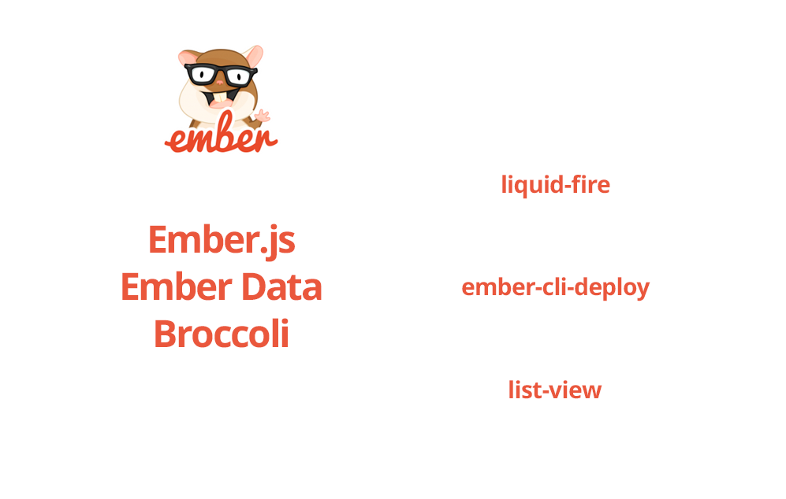
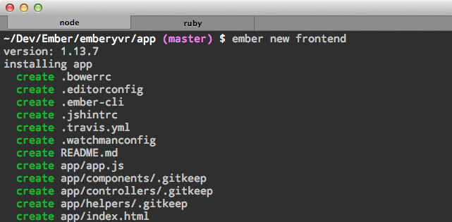
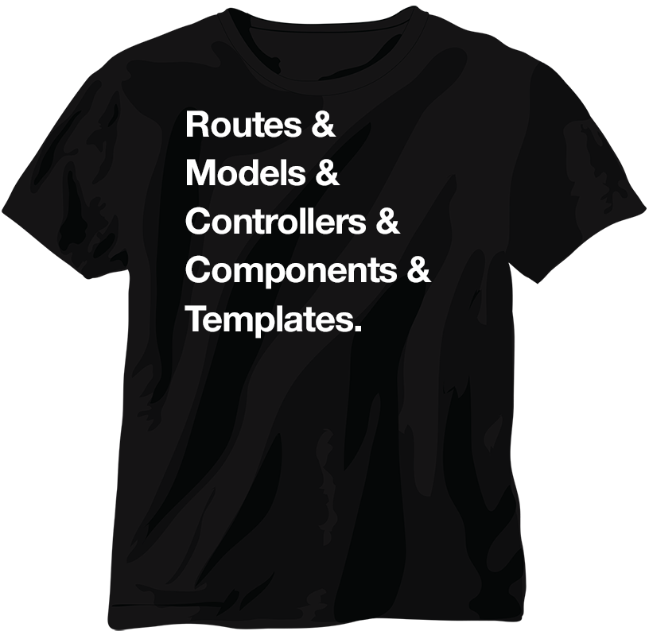
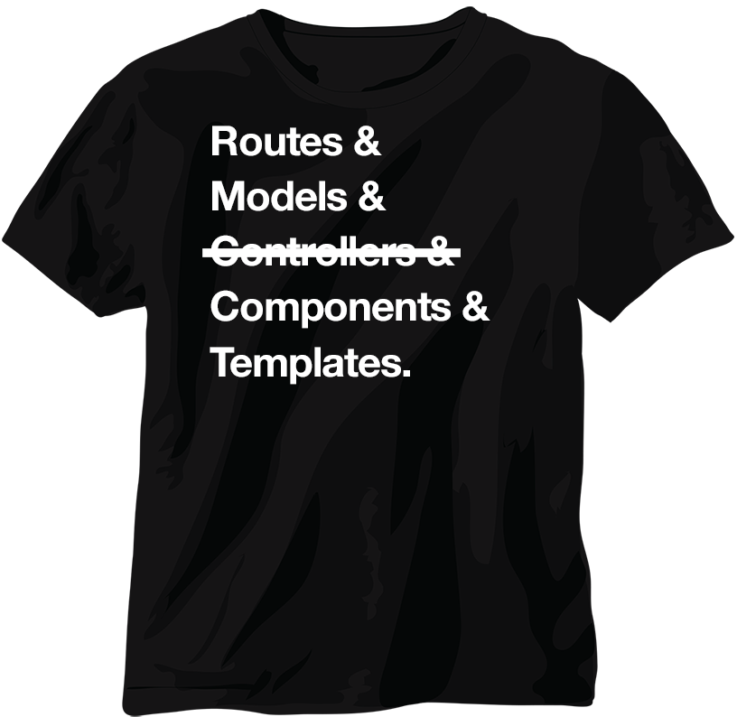

Ambitious web apps with Ember
Benjamin Borowski / Ember.YVR / @typeoneerror
What is Ember?
- A framework for creating web applications.
- An ecosystem for building web applications that utilize the framework.
The Ember 2.x Stack
- Ember.js — Building-blocks of your app
- Ember CLI — Command line build tools, add-ons, server
- Ember Data – Default data store
-
Liquid Fire — Animations and transitions - List View — View renderer for large lists
-
Ember Inspector — Inspecting & debugging
Ember CLI is Ember
Installing Ember CLI
Requirements
You'll need the latest version of Node & NPM (https://nodejs.org/).
Installing
# install the cli client
$ npm install -g ember-cli@1.13.7
# install bower
$ npm install -g bower
# we got it?
$ ember -v
Creating the app
$ ember new frontend

Created files
What did we get?
- app — most of our code'll go here
- app/router.js — define app URLs here
- config — configure Ember CLI
- ember-cli-build.js — configure build (think gulp, grunt)
Using Pods
Pods group related files into named folders.
Default is true in Ember 2.x.
// No pods
controllers/meetups.js
models/meetup.js
routes/meetups.js
// With pods
meetups/controller.js
meetups/model.js
meetups/route.js
{
"disableAnalytics": false,
"usePods": true
}
Running the app
$ cd frontend
$ ember server
Concepts

Route
- Routes a URL to a template/component resource
- Provides a model to be passed to a controller (or component)
Adding a route
$ ember generate route meetups
or use generate short-hand
$ ember g route meetups
Specify the route's model
The model hook should return a Promise.
model() {
return [1, 2, 3];
}
Route renders the template
Upcoming meetups
{{#each model as |meetup|}}
{{meetup}}
{{/each}}
Controllers
- Wiring between Route and Template.
- Created automatically even you don't define one.
- Soon to be fully replaced by Components.
$ ember g controller meetups
Models
Let's get some data into our app
$ ember g model meetup title:string createdAt:date updatedAt:date
Serializing data
$ ember g adapter application
$ ember g serializer application
Adapter Scope
Change our namespace since our API is at /api
import DS from 'ember-data';
export default DS.JSONAPIAdapter.extend({
namespace: 'api'
});
Serializing data
Special case until Ember 2.0 stable release:
import Ember from 'ember';
import DS from 'ember-data';
var underscore = Ember.String.underscore;
export default DS.JSONAPISerializer.extend({
keyForAttribute: function(attr) {
return underscore(attr);
},
keyForRelationship: function(rawKey) {
return underscore(rawKey);
}
});
Proxying requests
Start the server with the --proxy flag to have all requests proxy through to your dev server.
$ ember server --proxy http://localhost:3000
OR in .ember-cli
"proxy": "http://localhost:3000"
Using Ember Data
Use the service on this.store to retreive data via promises.
model() {
return this.store.findAll('meetup');
}
Components
Reusable HTML controls
$ ember g component meetup-item
Ember 2.something

https://github.com/ef4/rfcs/blob/routeable-components/active/0000-routeable-components.md
Thanks, Ember.YVR!
Reach out to @typeoneerror on Twitter with questions